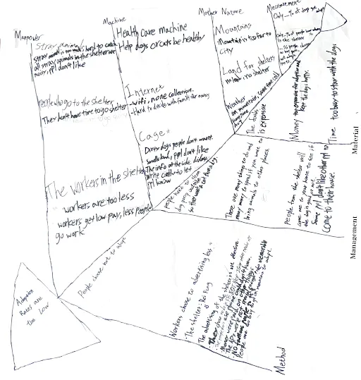

(3).gif) Charlize
Charlize
About our research
Intro
These pages will be about how we learn to do research and the way we find our topic
There will be intro video about how do we find our topic and there will also info about our fish bone
we will be talking about 5 whys and our result base on our fish bone
Intro Video 5WHYs
practice with Da an
Video 1
Video 2
Video 3
Learning to do research
We learned how to do research this semester
5 WHYS
- 1.Why the advertisement not effective?
- Because they choose to work on not popular apps.
- 2.Why they choose to work on not popular apps?
- Because they think that is cheaper and easier to use.
- 3.Why they think that is cheaper and easier to use?
- Because they don't have enough money.
- 4.Why they don't have enough money?
- Because they don't have enough support or funding.
- 5.Why they don't have enough support or funding?
- Because too less people know or about the shelter.
More details
The fish bone reaserch for finding the main problem
We find the 5 whys by using the fish bone reasearch
FISH bones
